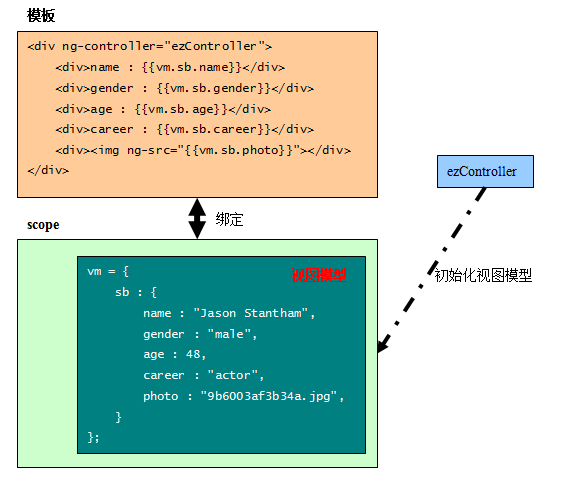

初始化$scope对象 通常做法：在应用启动时，需要初始化scope对象上的数据模型。 升级做法：使用控制器则是更为规范的做法。 利用控制器对业务模型进行初始化赋值：示例图：  注意：控制器仅仅负责在编译时在scope对象上建立视图对象vm，视图对象和模板的绑定则是由 scope负责管理的。
name: {{vm.sb.name}}
gender: {{vm.sb.gender}}
age : {{vm.sb.age}}
career : {{vm.sb.career}}